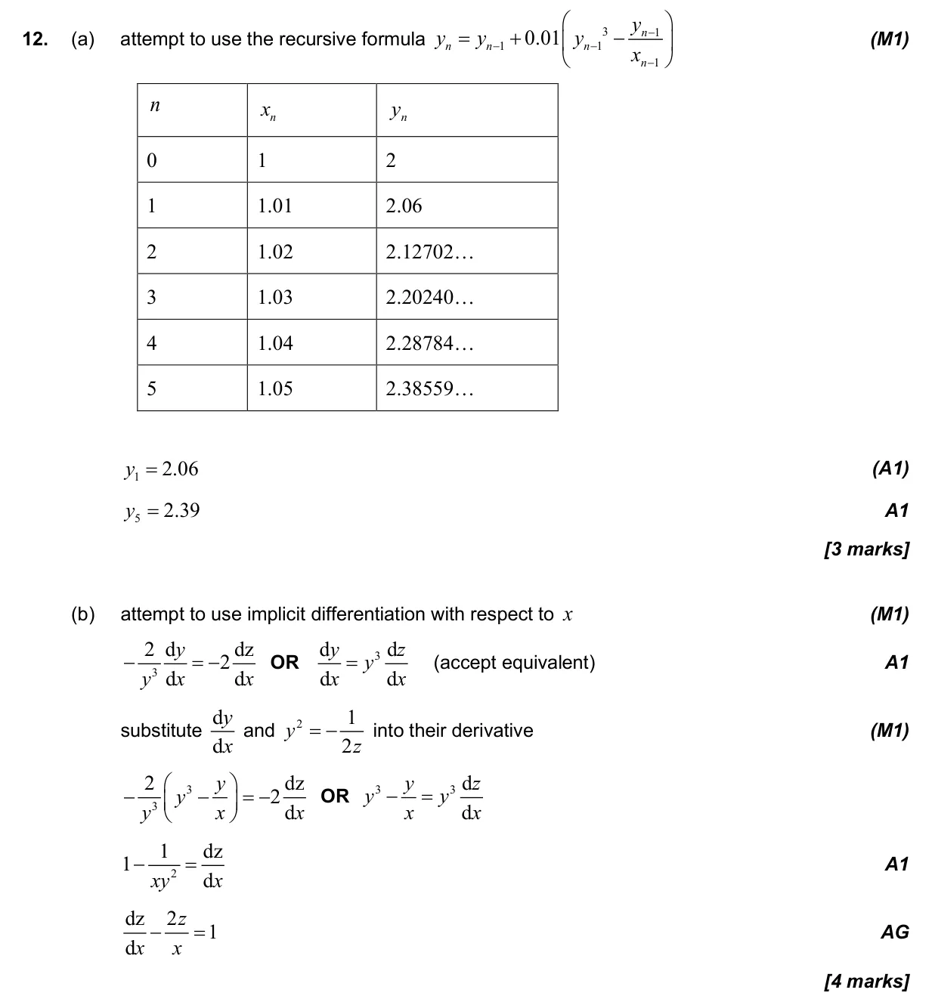
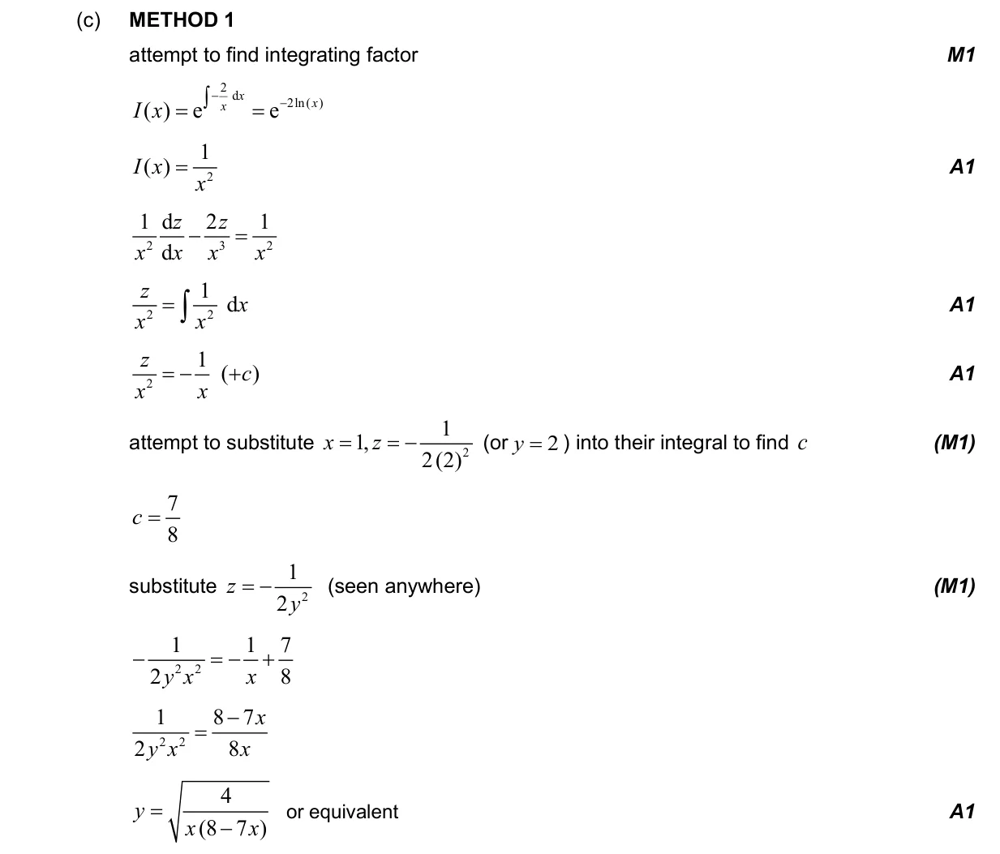
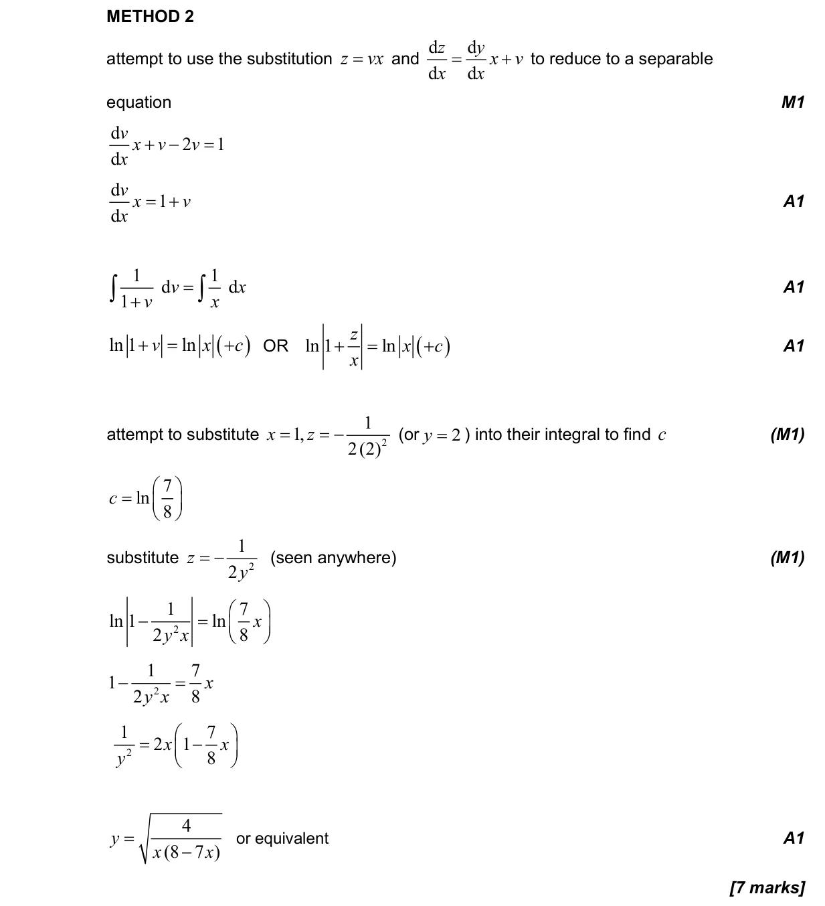
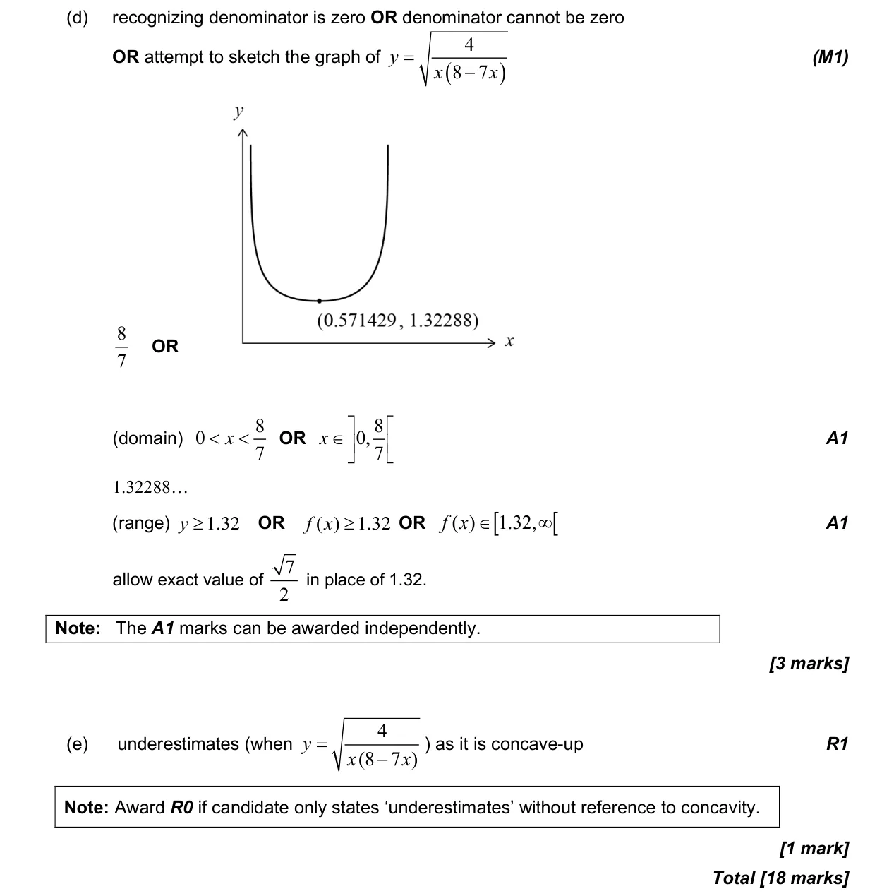

18 marks P2 TZ3 Section B Calculator 5.18 First-order differential equations5.14 Implicit differentiation, related rates of change and optimisation2.2 Functions, notation, domain, range and inverse as reflection2.4 Key features of graphs5.7 The second derivative Question Hide breakdown abcde Markscheme 